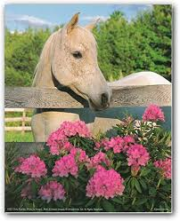

El origen de estados unidos. El Morgan, en ocasiones ha sido considerado como parte de la familia del Standardbred, pero como estos caballos han sido criados más, bien por sus cualidades de utilidad y no de velocidad, y como sus características están bien establecidas y perpetuadas con marcadas regularidad, es correcto considerarlos como una raza distinta.
El desarrollo inicial del Morgan se llevó a cabo en nueva Inglaterra. Así es que los Estados Unidos tienen el crédito por haber fundado tres razas ligeras. La fundación de la raza Morgan se le atribuye a un solo semental, Justin Morgan, un caballo de extraordinaria prepotencia. Se sabe poco de sus ancestros. }
Un investigador logró reunir la evidencia que indicaba que Justin Morgan fue descendiente de True Briton, también conocido como Beatiful Bay, un semental pura sangre que se remontó al origen del directo de Byerly Turk y hallo también rastro de sangre árabe.
Sus habilidades en el paso, trote y galope, en el que superaba al resto de razas, hicieron que Figura se convirtiera en una referencia a nivel nacional hasta su muerte a los 32 años de edad.
Otro investigador sostiene que fue antecedido por un caballo holandés que, a su vez, se derivó de la raza caballo árabe.
La raza Morgan es un caballo enérgico, fuerte y siempre dispuesto a ayudar, es un caballo con carácter. Es un caballo versatil inteligente, curioso y de una estampa preciosa, se le utiliza con grandes resultados en el tiro ligero y en la doma clásica, así como en el rejoneo y el paseo sus aires son limpios y cortos así como sus movimientos.
Su conformación es imponente y perfecta. Durante su historia éste caballo se ha utilizado mucho para el trabajo gracias a la disposición tan maravillosa que tiene, a sus ganas de agradar y a lo bien que se comunica con su jinete. Es además un caballo muy trabajador y de manejo fácil.
Cuando llegó la fiebre por los caballos trotadores, la demanda de coches para caballos de tiro decreció y los Morgan fueron olvidados por algún tiempo, pero sus fanático jamás perdieron la fe en ellos y nunca desaprovecharon la oportunidad de explotar sus buenas cualidades. Recientemente los muertos se han convertido en una raza muy popular en algunas regiones, tienda El Morgan House Club, un resultado de este movimiento.

Características de la raza de caballo Morgan
Los Morgan Generalmente son colorados, alazanes, retintos o prietos. con Manchas poco comunes. (Ver todas las capas de caballos)
1.42 m – 1.55 m es el promedio de la alzada de un buen Espécimen eso es casi de 1050 lb (476 kg), pero como en todas las razas hay una variación considerable.
Esta raza siempre ha tenido fama por sus líneas suaves.
Bonito estilo.
Nariz fina
Crin abundante
Dorso corto y ancho y musculoso
Extremidades delgadas y bien alineadas
Cola larga ligeramente abundante y debe llegar al suelo cuando el animal se encuentra en reposo.
Cascos son redondeados y bien formados
Capacidad de ser fáciles de poseer.
Resistencia y su docilidad- esta última, sin embargo, no se obtiene en un sacrificio del valor y la ambición.
Orejas pequeñas.
Un par de buenos ojos – que están ampliamente separados.
Cuello de cisne
Costillas bien convexas- con la última cerca de la punta de la cadera.
Ancas amplias
Grupas a un nivel normal
Cuartos llenos
Las patas y casco resistentes son las cualidades que le han dado al Morgan
Una velocidad considerable al trotar, algunas familias han contribuido materialmente para la formación del Standardbred.
Algunas otras con características más bien de caballos de silla han ejercido una influencia muy marcada sobre el caballo americano de silla.
Puede recorrer hasta 40 km día.